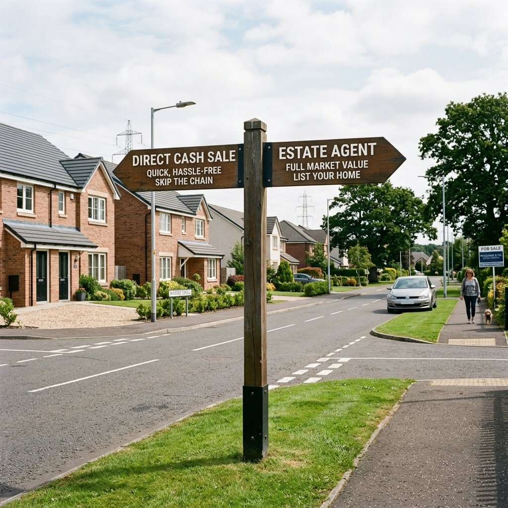

Cash Home Buyers in Paisley: How to Find a Buyer You Can Trust
Quick Summary
Selling your house in Paisley to a cash buyer offers a guaranteed, fast, and fee-free transaction. However, the rise of online property buyers makes finding a partner you can trust critical. This detailed guide reveals how to verify direct cash house buyers Paisley, spot hidden fee red flags, compare selling methods, and ask the right questions before accepting an offer.
If you are looking to sell a property in Paisley, you have likely noticed that the traditional estate agency route is not always the best fit. Putting a home on the open market, scheduling endless viewings, and waiting for surveys can take several months. When your circumstances demand a fast, clean sale, dealing directly with commercial cash home buyers Paisley is an appealing alternative.
But how do you know who to trust? The property buying industry in Scotland is filled with varying options, and it can be difficult to tell the difference between genuine, well-funded direct buyers and secondary middleman operations. This guide walks you through the exact checking procedures, comparisons, and warning signs so you can make a fully informed decision.
Why Paisley Homeowners Look for Cash House Buyers
Paisley acts as one of the largest commuter hubs in Scotland. Its proximity to Glasgow, Glasgow Airport, and the University of the West of Scotland (UWS) makes it a popular market. But Paisley's housing stock is incredibly varied—ranging from traditional Victorian sandstone flats in the town centre to modern villas in Ralston. Because of this diversity, homeowners often find themselves in situations where a traditional open-market sale is difficult or stressful.
Here are the primary reasons why local sellers look for cash house buyers Paisley:
- Avoiding chain collapse: Buying chains are fragile. If one buyer's mortgage falls through, the whole chain collapses. A cash buyer doesn't rely on mortgages or chains, providing absolute certainty.
- Fixer-uppers and damp issues: Older sandstone tenements and dated properties can fail standard surveys, making it hard for normal buyers to secure a mortgage. Cash buyers buy in any condition.
- Settle inherited properties quickly: Resolving the legal Confirmation process in Scotland can be exhausting. A direct sale helps executors liquidate the asset promptly to distribute the estate.
- Financial and repossession pressure: If you are falling into mortgage arrears, acting quickly before a court date is vital to protect your credit and equity.
- Divorce or relationship breakdown: Relationships ending often require the fast liquidation and equal division of assets so both parties can move forward cleanly.
- Empty property council tax premiums: In Renfrewshire, empty properties can face a 200% council tax premium. Selling quickly stops this financial drain.
What Is a Cash Home Buyer?
Before proceeding, it is important to establish what a genuine cash buyer actually is. Here is a clear, standard definition:
Definition
A cash home buyer is a person or company that can buy your property directly using available funds, without relying on a mortgage or a chain. For sellers in Paisley, this can mean a faster sale, fewer delays, and less uncertainty.
Because they are using ready capital, cash home buyers Paisley do not need to wait for bank valuations, mortgage approvals, or survey reviews from external lenders. This drastically reduces transaction times from months down to a matter of days.
If you are considering a quick sale in Paisley, SB Properties UK can talk you through your options and explain what a cash offer could look like. There is no obligation to proceed.
Are Cash Home Buyers in Paisley Legitimate?
The short answer is yes, many are fully legitimate businesses. However, because the property buying sector is not regulated in the same way as financial services, there are several bad actors and structural tactics you must watch out for.
A genuine cash buyer purchases properties at a discount relative to full market value. In exchange, they offer rapid speed, cover all legal costs, require no Home Report, and buy the property as-is. If a company claims they can pay you 100% of market value and complete in 7 days, this is a major warning sign. They are either hiding hidden fees or planning to drop the price at the last minute.
Some firms are not buyers at all. They are lead generation middlemen or "property sourcers" who tie your property down with a contract, then try to find an investor to sell it to. If they fail to find an investor, they walk away, leaving you with months of wasted time.
Signs of a Trustworthy Cash Buyer
When searching for a reputable cash house buyers Scotland specialist, verify that the buyer shows the following characteristics:
- Clear company name and contact details: They display a registered business name, a registered UK company number, and a physical office address.
- Local knowledge: They understand the Renfrewshire market, including localized issues like tenement repairs, factoring systems, and UWS proximity.
- Transparent process: They explain exactly how they calculate their valuation.
- Written offer: They provide a formal, transparent offer in writing rather than verbal estimates.
- No pressure to sign immediately: They encourage you to consult your own independent solicitor and family members.
- Clear explanation of fees: They confirm in writing that there are no commissions, administrative fees, or structural check deductions.
- Willingness to explain valuation: They share local comparable sales data to justify their offer.
- Clear timescale: They commit to a completion date that works around your requirements.
- Evidence of real activity: They show a track record of buying properties locally.
- Professional communication: They maintain polite, honest, and prompt communications.
Warning Signs to Watch Out For
If you encounter any of the following red flags, proceed with caution or look for another buyer:
- Very high initial offer followed by price drops: This is a common tactic called "gazundering," where the buyer lowers the offer right before concluding missives, banking on you being too committed to back out.
- Pressure to sign quickly: They use high-pressure sales techniques or demand you sign option agreements that tie up your property.
- Vague company details: They only provide a mobile phone number or a generic contact form with no physical registered office details.
- No written offer: They refuse to commit their offer to paper.
- Hidden fees: They charge "administrative fees," "survey costs," or deduct valuation charges from the final payout.
- Refusal to explain valuation: They offer a figure but won't explain how they calculated it.
- No clear timescale: They keep the completion date open-ended.
- Middlemen pretending to be buyers: They try to sign "option contracts" or "exclusivity agreements" which allow them to market your property to third parties.
- Asking for upfront fees without clarity: Never pay any upfront fees for valuations or legal registration.
- Poor communication: They become hard to reach once you express hesitation or ask detailed questions.
How to Check Cash Home Buyer Reviews in Paisley
Sellers searching for "cash home buyer reviews Paisley" want reassurance that they are dealing with an honest company. Because online reviews can sometimes be manipulated, here is how to check them properly:
- Verify Google Business Profile reviews: Look for reviews that mention specific street names, property issues, or direct interactions. Generic, short reviews can sometimes be fake.
- Check Companies House: Use the free Companies House company search to review their filing history, directors, and age of the business. Be wary of companies that have been active for less than a year.
- Verify Trustpilot ratings: Read 1-star and 2-star reviews specifically to see how the company responds to complaints or issues.
- Look for local mentions: Search Scottish property forums or check if they are registered with bodies like the Law Society of Scotland or independent property schemes.
- Cross-reference contact details: Check if their registered office address matches the address on their website.
At SB Properties UK, we encourage all potential clients to run these checks on us and any other company. We believe in complete transparency and local accountability.
Cash Buyer vs Estate Agent vs Auction: Which Is Best?
To help you decide which route is right for your Paisley property, we have created a balanced comparison table highlighting the main features of each method:
| Option | Best For | Typical Speed | Main Advantage | Main Drawback |
|---|---|---|---|---|
| Cash Buyer | Speed, certainty, avoiding chains, houses needing work | 7 - 28 Days | Guaranteed sale, zero fees, no chains, no Home Report | Below full market value |
| Estate Agent | Achieving the maximum open-market price | 3 - 9 Months | Highest possible sale price on the open market | Chain risk, upfront costs, agent fees, no speed guarantees |
| Auction | Fixer-uppers, land, and unique properties | 8 - 12 Weeks | Competitive bidding, legally binding hammer price | High buyer/seller fees, no guarantee the reserve is met |

If you want to read a full cost breakdown comparing traditional agents with direct buyers, review our dedicated guide on estate agent vs cash buyer costs in Scotland.
If speed and certainty matter more than waiting months on the open market, speak with SB Properties UK about your Paisley property and find out whether a direct cash sale may suit your situation.
Questions to Ask Before Accepting a Cash Offer
To protect yourself and ensure you are dealing with reputable cash house buyers, ask these ten direct questions before signing any paperwork:
- Are you buying directly using your own cash funds, or are you passing my details to another buyer?
- Is your cash offer in writing, and how long is it valid for?
- Are there any fees, commissions, or survey costs deducted from the offer?
- How quickly can you complete the transaction, and can we choose the date?
- Will the offer price change after a surveyor visits or right before completion?
- Do I need to commission a Home Report before you buy?
- Will you cover my independent solicitor's legal conveyancing costs?
- What happens if I change my mind before concluding missives? Are there any penalties?
- Have you bought residential properties in Paisley or Renfrewshire recently?
- Can you explain exactly how you calculated this offer relative to the local market?
When a Cash Sale Could Make Sense for a Paisley Homeowner
While a cash sale does not suit everyone, there are several key scenarios where it is the most practical option:
- The house needs work: Many traditional buyers struggle to get mortgages on properties that have structural issues, dry rot, damp, or old wiring. Selling a house as-is avoids these repair bills. Read more on how to sell a house that needs work.
- Selling inherited property: Dealing with an estate during probate is emotional. Resolving Confirmation is easier when you can secure a guaranteed sale. Check out our guide on selling an inherited property in Scotland.
- Empty property council tax premium: Avoiding monthly holding costs is critical. A cash sale stops the council tax bills.
- Selling before repossession: If a lender has set a court date, a fast cash buyer can step in to halt the repossession process. Learn about selling before repossession.
- Divorce or settlement: Quick liquidation allows couples to split funds and establish new lives.
- Problem tenants or student lets: You can sell with tenants in situ to avoid evictions.
- Job relocation: A direct sale prevents you from paying two mortgages if you move quickly.
- Failed estate agent sale: Recovering from a chain collapse quickly.
- Privacy: No public listings, no boards, and no viewings.
- Absolute certainty: The sale will close on a guaranteed timeline.
When a Cash Buyer Might Not Be the Best Option
To make the right choice, it is vital to understand when a cash buyer is not the right fit. If your property is in perfect walk-in condition, located in a highly desirable pocket of Ralston or Castlehead, and you are under no financial or time pressure, you should list with a local estate agent. While you will have to pay for a Home Report, agent commissions, and deal with public viewings, the open market is the best way to achieve the absolute maximum sale price.
A cash sale is a balance. You trade a portion of the market value in exchange for speed, convenience, and complete chain-free certainty. The right choice depends purely on your primary goals: speed and convenience, or maximum price.
How SB Properties UK Helps Paisley Sellers
If you decide that a cash sale is the best path forward, SB Properties UK is here to help. We are a direct property buyer operating in Paisley, Glasgow, and Central Scotland. Here is how we support local sellers:
- Direct buying funds: We use our own cash reserves, meaning there are no mortgage delays or broker reviews.
- We buy as-is: Whether you have a town-centre tenement flat or a house requiring full renovation, we buy in any condition.
- No estate agent fees: We charge zero commissions or marketing fees.
- No upfront Home Report: We do not require you to pay for an upfront Home Report.
- No-obligation offers: Our conversations are completely confidential and no-obligation.
- Simple, local process: We work directly with Renfrewshire-based solicitors to keep the process straightforward.
To see how we can assist with your specific property, visit our dedicated page to sell my house fast in Paisley.
FAQs About Cash Home Buyers in Paisley
Are cash home buyers in Paisley safe to use?
Yes. Many cash buyers are safe, but you must verify their credentials. Always check their Companies House details, read reviews, verify proof of cash, and consult the Law Society of Scotland to ensure your solicitor is independent.
How quickly can I sell my house for cash in Paisley?
Usually, a sale can complete in 7 to 28 days. The speed is determined by how quickly the solicitors can locate the title deeds and complete the standard legal checks.
Will I get full market value from a cash buyer?
No. Cash home buyers Paisley purchase properties at a discount in exchange for speed, convenience, and covering all sales costs. It is a trade-off between price and speed.
Do I need to pay estate agent fees?
No. Selling directly to a cash buyer involves no estate agents or portals, meaning you pay zero commissions or listing fees.
Can I sell an inherited house in Paisley for cash?
Yes. You can agree on a sale price immediately, though legal completion will take place once the Sheriff Court grants Confirmation.
Can I sell a house that needs repairs?
Yes. Direct cash buyers purchase properties in any condition, meaning you do not need to spend money on upgrades or refurbishment before selling.
How do I know if a cash buyer is genuine?
A genuine cash buyer will have registered business listings, independent proof of funds, positive local reviews, and will never charge upfront fees.
Should I use an estate agent or a cash buyer?
Use an estate agent if you have time and want the highest price. Use a cash buyer if you need speed, certainty, or want to avoid repair costs.
Can I sell if my house has tenants?
Yes. You can sell with tenants in situ. The buyer takes over the tenancy agreement, meaning the tenants do not have to move out.
Is the cash offer legally binding?
No. In Scotland, a cash offer is not legally binding until missives are concluded by solicitors. You are free to walk away before that stage.
Final Thoughts: Choosing the Right Cash Buyer in Paisley
A cash sale can be a highly effective route to resolve complex property situations, avoid the suburban chain squeeze, and get on with your life. However, it is vital to proceed with your eyes open. Ask the ten key questions, research Companies House profiles, check independent reviews, and never accept high-pressure terms.
For independent advice on housing issues, you can also consult Citizens Advice Scotland.
To discuss selling your house quickly in Paisley, contact SB Properties UK for a simple, no-obligation conversation.